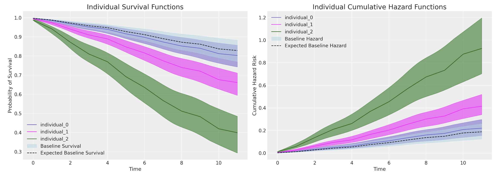

Survival Regression Models in PyMC
Time to Attrition in People Analytics
11/24/23
Regression for Survival Times
Distributions for Modelling Attrition

Monotonoc or non-monotonic hazards determined by distribution choice. Risk spikes important in early periods of employment.
Proportional Hazards Cox Regression
Using the Poisson Trick

\[ CoxPH(left, month) \sim gender + level \]
is akin to
\[ left \sim glm(gender + level + (1 | month)) \\ \text{ where link is } Poisson \]
applying an offset to the event rate for each time interval.
Comparing Models
Stated Intention and Sentiment
\[ CoxPH(left, month) \sim gender + field + level + sentiment \]
\[ CoxPH(left, month) \sim gender + field + level + sentiment + intention \]

Comparing Models
Interpreting Model Coefficients
- If \(exp(\beta)\) > 1: An increase in X is associated with an increased hazard (risk) of the event occurring.
- If \(exp(\beta)\) < 1: An increase in X is associated with a decreased hazard (lower risk) of the event occurring.
- If \(exp(\beta)\) = 1: X has no effect on the hazard rate.
Predicting Marginal Effects 
Comparing Models
Predicting Marginal Effects


Comparing Models

AFT models allow us to quantify the acceleration factor due to an individual or group’s risk profile.
Comparing Models
Marginal Survival Functions and WAIC

Frailty Models and Individual Heterogeneity
We want to relax the assumptions of Cox Proportional Hazards model. We introduce (i) frailty terms and (ii) stratified risks
\[ \lambda_{i}(t) = \color{green}{z_{i}}exp(\beta X)\color{red}{\lambda_{0}^{g}(t)} \]
The multiplicative frailty terms \(z_{i}\) can be specified as a gamma distribution centred on unity with stratified risks

Frailty Model Structure
Shared Frailties

Individual Frailties and Marginal Statistics

Conclusion
- Survival Analysis is a tool for the expression of probabilities governing state-transitions
- Important everywhere process efficiency and transformative outcomes matter.
- Allows for sophisticated expression of risk over time and along many dimensions.
- Bayesian estimation of these complex model structures is natural and informative.